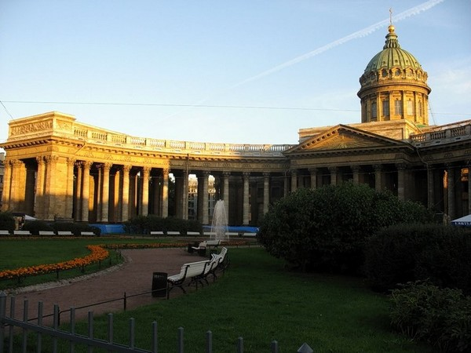
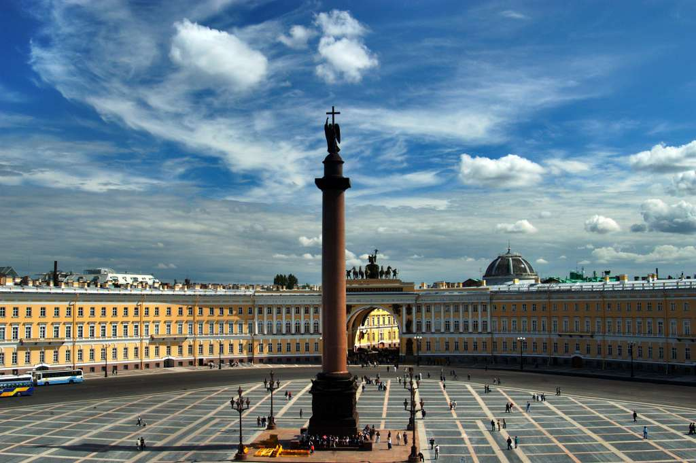
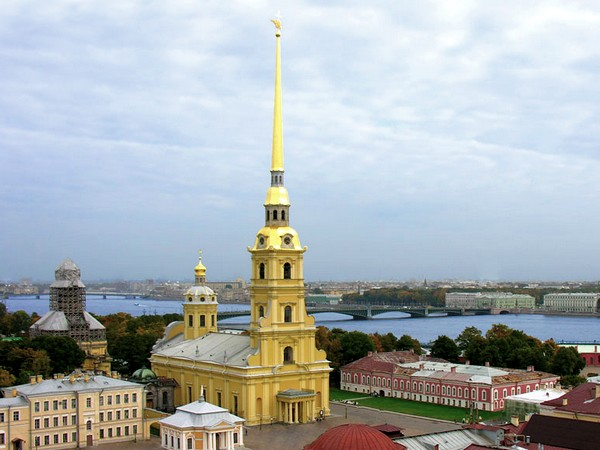

Санкт-Петербург — город федерального значения на северо-западе Российской Федерации,
важнейший после Москвы экономический, промышленный, научный и культурный центр, крупный
транспортный узел; административный центр Ленинградской области и Северо-Западного
Федерального Округа и центр Санкт-Петербургской городской агломерации. Город-герой.
Санкт-Петербург считается одним из красивейших городов мира.
| Фотография | Описание |
|---|---|
|  | Казанский кафедральный собор — главный храм православной церкви. Функционировать начал ещё в 1733 году, когда на его месте была образованна каменная церковь Рождества Пресвятой Богородицы. Здесь праздновали победы русских войск. В период Октябрьской революции интерьер собора пострадал. Здесь прошла капитальная реставрация. В 2000 году собор получил статус кафедрального собора, каким является по сей день. |
|  | Александровская колонна находится на Дворцовой площади, это прекрасное и уникальное сооружение, которое не имеет аналогов во всем мире, она была создана архитектором Монферанном по заказу великого Николая Первого, который хотел, чтоб слава о победе его брата Александре Первом над Наполеоном была увековечена. В 1834 году эта колонна была установлена на центральной площади, сделана она была из розового гранита, ее высота составляла 47,5 м2, это уже рассчитано со статуей, которая находится на вершине. |
|  | Петропавловский собор — это архитектурный символ города Санкт-Петербург. Он был образован ещё в 1712—1733 годах. Ранее это здание, считалось, усыпальницей императоров. В настоящее период здесь проходят богослужения, а также концерты карильонной музыки. Настоятелем храма является игумен Александр. Он входит в епархию Санкт-Петербурга по архитектурно-художественным вопросам. |
Обязательно посетите следующие городские музеи:
Ознакомиться со списком всех музеев Санкт-Петербурга можно вот здесь.
© 2018 Nikita for Home.
{kind=link}
{kind=link}
{kind=link}